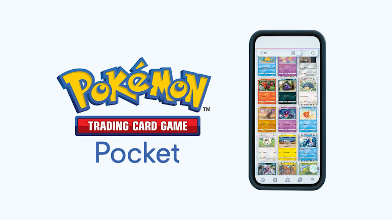
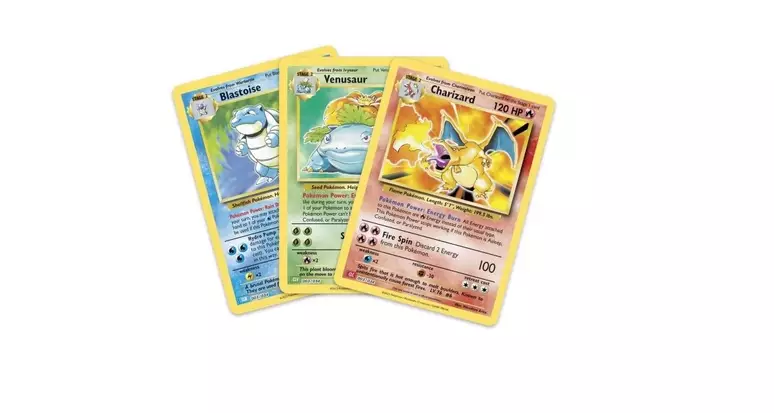

Pokémon Trading Card Game Pocket - Novo Aplicativo é Anunciado e Será Lançado em 2024
A The Pokémon Company anunciou, durante a transmissão do Pokémon Presents, que está desenvolvendo um novo aplicativo que promete gerar experiências inovadores para os fãs do Pokémon Estampas Ilustradas. O aplicativo se…
por Danilo Andretta - 04/03/2024
Goiânia recebe torneio regional de Pokémon com prêmios de US$ 5 mil
Goiânia - Goiânia será o palco do Campeonato Regional de Trading Card Game - Estampas Ilustradas (TCG) e Pokémon GO. O evento ocorre nos dias 9 e 10 de março no Centro de Convenções e irá contar com premiações de US$ 5 mil para os vencedores. As inscrições podem ser feitas através dos links fornecidos no site oficial da COPAG/Pokémon…
por Danilo Andretta - 04/03/2024

Nova Coleção de Pokémon TCG é Anunciada - Escarlate e Violeta: Forças Temporais
A The Pokémon Company International anunciou a nova expansão de Pokémon TCG - Escarlate e Violeta: Forças Temporais, que estará disponível no mundo todo a partir de 22 de março de 2024.Apresentadas pela primeira vez na série Black & White, as cartas ACE SPEC retornarão ao Pokémon Estampas Ilustradas na expansão Forças Temporais. As cartas ACE SPEC têm efeitos poderosos, mas cada baralho será limitado a apenas uma carta ACE SPEC. Além disso, as cartas…
por Danilo Andretta - 10/01/2024
Nova Coleção de Pokémon TCG - Destinos de Paldea
A The Pokémon Company International anunciou uma nova expansão especial do Pokémon Estampas Ilustradas - Destinos de Paldea, que será lançada no mundo todo a partir de 26 de janeiro de 2024.Inspirada nas expansões populares Destinos…
por Danilo Andretta - 17/11/2023
